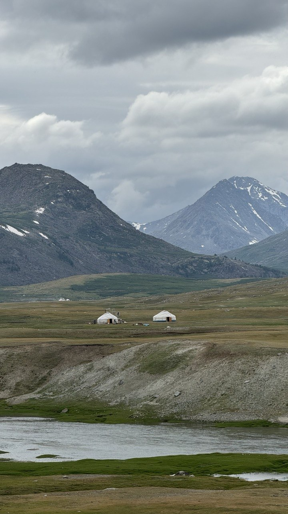

The Untouched Landscape and the Altai Brothers Base Camp
Yamaat is a remote place in the far west of Mongolia where Kazakh nomadic families have lived for centuries. Clear rivers, dense forests, and wild animals surround the summer camps. The white, bowl-shaped yurts are traditional homes used by local families. Our family-run travel agency welcomes visitors who want to experience this landscape respectfully.
A short history
- 1187: First nomadic clans settled in the region.
- 1423: The area became an important seasonal meeting place.
- 1678: Traditional nomadic routes were established.
- 1846: The region became a protected sensitive zone.
- 1932: Local rules were created to protect the landscape.
- 1998: The area was recognized as a protected cultural landscape.
What makes the camp special
- Untouched green land
- No mobile signal or electricity
- Home to nomadic families
- A sensitive natural zone

The western valleys are a place of quiet beauty, where nomadic families have followed the land for generations.
Local elder from the western steppe
A short view of the journey: